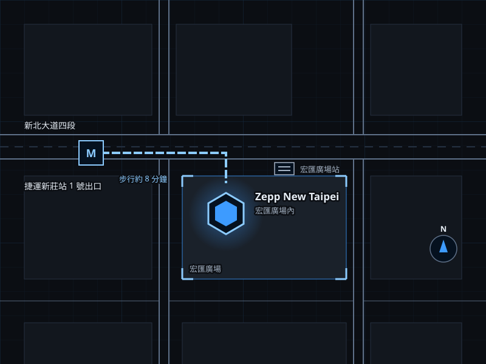

預售全票
午夜噪音祭 Vol.7
- 入場時間 19:30
- 2026/10/18 (六) ‧ Zepp New Taipei

每 60 秒自動更新，請勿截圖轉傳
票號 T-4471-01
電子票券
第 1 張，共 3 張
預售全票
每 60 秒自動更新，請勿截圖轉傳
票號 T-4471-01
預售全票
每 60 秒自動更新，請勿截圖轉傳
票號 T-4471-02
VIP 搖滾區
每 60 秒自動更新，請勿截圖轉傳
票號 T-4471-03
本活動於 10/11 前可申請退票，收取票價 10% 手續費；10/11 之後恕不退換。活動取消或延期則全額自動退款。

宏匯廣場地下停車場（B2–B5），活動當日車位有限，建議提早或搭乘大眾運輸。
開啟導航（在新分頁開啟 Google 地圖）設計稿狀態示意
入場掃碼後，這張票的 QR Code 失效，操作按鈕收起來。
預售全票
已使用
這張票已於 10/18 20:14 完成驗票，無法重複入場。
票號 T-4471-01
設計稿狀態示意
活動結束後沒有驗票的票，移到我的票券的「已過期」。
預售全票
已過期
這場活動已經結束了，票券移至歷史紀錄。
票號 T-4471-01
設計稿狀態示意
主辦方取消活動後，票券與操作按鈕一起停用，改成查看退款進度。
主辦方已取消本場活動，退款將於 3–5 個工作天內原路退回。
預售全票
活動已取消
票號 T-4471-01